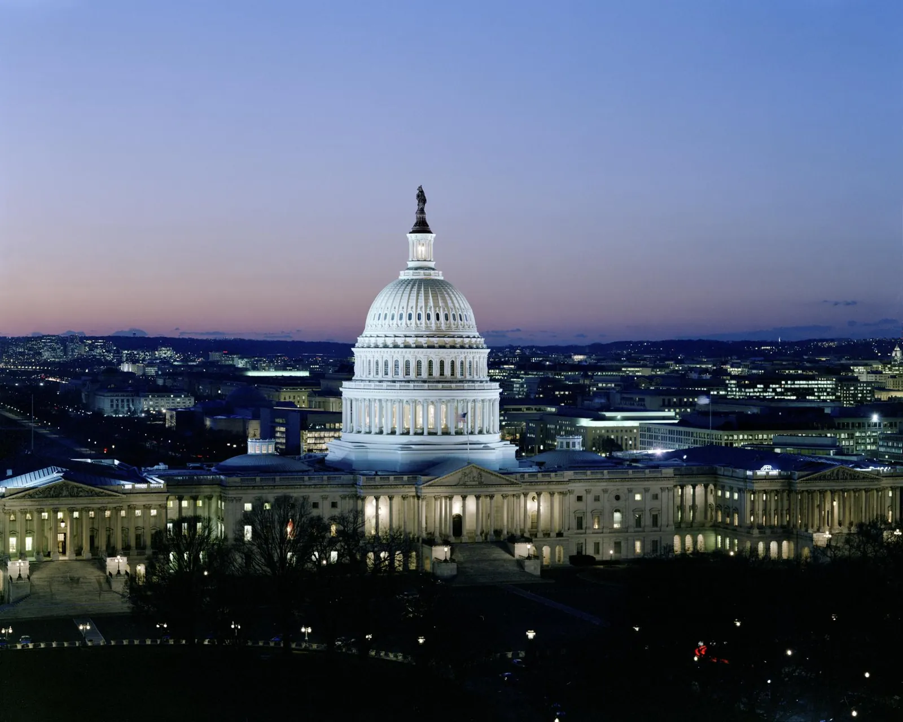
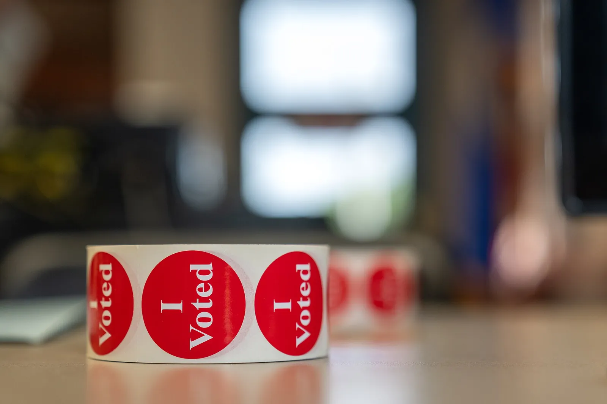
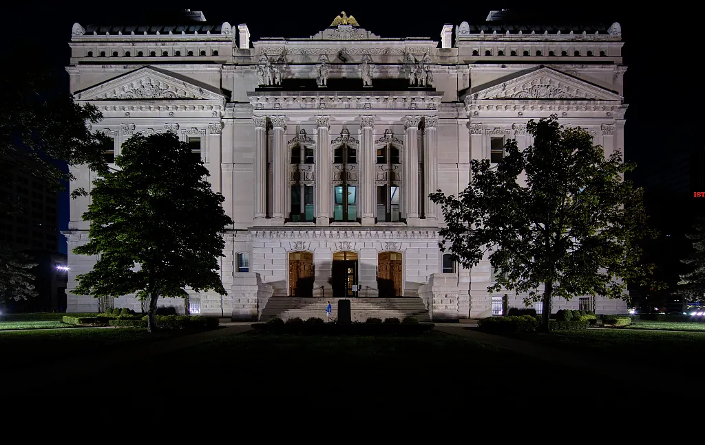

The 2026 Midterms / A five-topic civics investigation
Who has
the power?
Understand the 2026 midterms, investigate congressional power, check election messages, and return after Election Day to explain the results and their possible impact.

Start with this question
If the president is not on the ballot, why can the midterms change who has power?
Learn the institutions before Election Day. Return afterward to examine results and their possible impact.
Start Topic 1 →The five-topic story
- 01
 Available
AvailableThe Election Nobody Understands
Find out what is on the 2026 ballot, compare the House and Senate, and explain how Congress can change while the president stays in office.
Open Topic 1 →Learning targets and success criteria
Learning targets
- I can explain what a midterm election changes and what it does not.
- I can distinguish House elections from Senate elections.
- I can explain one way a changed congressional majority could affect government decisions.
Success criteria
- I can identify congressional offices on the ballot and explain that the presidency is not being elected.
- I can sort at least four of five House/Senate facts correctly and correct my errors.
- I can use one verified fact to explain a possible governing consequence.
- 02
 Available
AvailableThe Battle for Congress
Follow individual seats to chamber control. Test how a small shift can change leaders, committees, and the agenda without guaranteeing a new law.
Open Topic 2 →Learning targets and success criteria
Learning targets
- I can explain how individual elections determine chamber membership.
- I can explain how a majority affects leaders and committees.
- I can distinguish organizing a chamber from passing a law.
Success criteria
- I can identify the majority in a constructed 435-seat House scenario.
- I can identify two decisions a new majority could influence.
- I can explain one reason chamber control does not guarantee a policy change.
- 03
 Available
AvailableThe Power to Stop a President
Investigate laws, spending, oversight, and confirmations. Explain how Congress checks a president and why disagreement can create both accountability and delay.
Open Topic 3 →Learning targets and success criteria
Learning targets
- I can explain ways Congress checks presidential power.
- I can explain why one election does not settle every governing decision.
- I can explain a benefit and a difficulty of divided government.
Success criteria
- I can accurately explain two congressional checks.
- I can explain why one chamber cannot ordinarily enact a law alone.
- I can support an accountability benefit and a governing difficulty with a specific example.
- 04

AvailableThe Fight for Your Vote
Investigate campaign framing, check a real claim, and read a poll without treating it as an election result.
Open Topic 4 →Learning targets and success criteria
Learning targets
- I can explain how a campaign message directs attention.
- I can check a claim against an independent source.
- I can distinguish a poll, a promise, and a verified result.
Success criteria
- I can identify a message’s claim, audience, and missing context.
- I can name a second source and explain what it supports, contradicts, or leaves unresolved.
- I can explain why a poll or promise does not establish what will happen.
- Nov 3Election Day
Election Day: What Can We Know Today?
Watch live Election Day coverage, learn how a vote becomes a result, and log what the coverage can and cannot tell us while the polls are still open. Keep your log for Thursday.
Open the Election Day guide →Learning targets and success criteria
Learning targets
- I can explain the steps from casting a ballot to a certified result.
- I can sort what the coverage reports into how voting works, reports from polling places, voter surveys, predictions, and claims to check.
- I can explain why no 2026 winner can be known while the polls are open.
Success criteria
- I can put polls open, polls close, unofficial count, news call, and certification in the right order.
- I can log at least four things the coverage said, each with a time, an outlet, and the kind of statement it is.
- I can name one thing the coverage established today and one thing that will have to wait, and say what would settle it.
- 05

After Election DayElection Night: What Happens Next?
Return after November 3 to record sourced 2026 results, identify unresolved races, and explain their possible governing effects. Separate established outcomes from predictions.
Open Topic 5 →Learning targets and success criteria
Learning targets
- I can distinguish a projection, unofficial count, and certified result.
- I can connect the 2026 outcome to a governing consequence and a limit.
- I can support an explanation with two sources and a fair alternative interpretation of the governing impact.
Success criteria
- I can record House, Senate, and one Indiana result or unresolved race with sources, reporting stage, and a check date.
- I can explain two possible governing effects and one outcome that is not guaranteed.
- I can use two identified sources, give another reasonable interpretation of the governing impact, and state an uncertainty.
Our class routine
Unit first. News after lunch.
Complete the investigation and checkpoint before lunch. Return for CNN10, daily reporting, and the News Log.
The final explanation
How did the 2026 midterm elections change who has power, and what could that mean for the country?
Topics 1–4: five practice choices, a brief source note, an application note, and a final explanation. Topic 5: a guided results notebook and one final explanation. Optional planning notes are not required. Political preference is not scored.
Use verified results. If control or a race is unresolved, explain conditional consequences and identify what still needs checking.
Unit goals and source standards
- Explain what voters choose in midterms.
- Connect chamber control to governing powers and limits.
- Check claims and separate evidence from prediction.
- Explain verified results with evidence and acknowledge uncertainty.
Government references establish institutional facts. PBS, WFYI, and Crash Course provide educational explanations. Campaign messages are evidence of a message, not independent proof of its claim. Results need a source, check date, and reporting stage.
Photo credits
- The west front of the United States Capitol under a blue sky, with the Senate wing on the left and the House wing on the right. Architect of the Capitol, public domain, via Wikimedia Commons ↗
- The empty chamber of the U.S. House of Representatives: curved rows of seats facing the Speaker’s rostrum and the flag. U.S. House of Representatives, public domain, via Wikimedia Commons ↗
- A witness answers questions at a long table during a Senate committee hearing, with staff seated behind him. NASA/Bill Ingalls, public domain ↗
- The north front of the White House, with its columned portico, fountain and flag. Carol M. Highsmith, Library of Congress, public domain ↗
- The U.S. Capitol dome lit up at dusk above the city of Washington. Carol M. Highsmith, Library of Congress, public domain ↗
- The Indiana Statehouse in Indianapolis, lit at night, with trees on either side of its front steps. Carol M. Highsmith, Library of Congress, public domain ↗
- A roll of red “I Voted” stickers on a table, with the room behind it out of focus. Lorie Shaull, CC BY 4.0, via Wikimedia Commons (resized) ↗